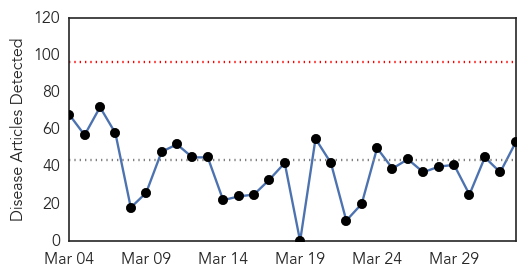
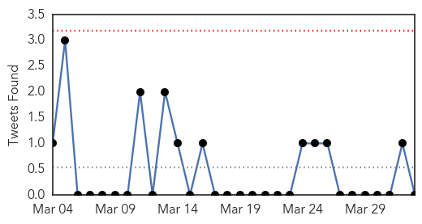
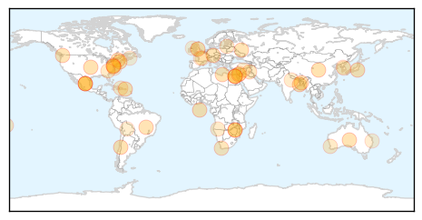
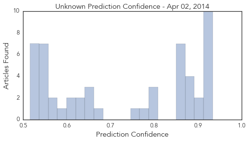

Toggle navigation
Early Warning
Daily Alerts
Unknown
Apr 02, 2014
30 Day Trends
Web: 0
alerts
, 0
warnings
Twitter: 0
alerts
, 0
warnings
Top Articles:
Showing top 50 articles...
0.934
Brucella canis infections diagnosed in Calgary dogs -- CALGARY, April 1, 2014
0.917
Chicago Tribune
0.917
Chicago Tribune
0.917
Chicago Tribune
0.917
Chicago Tribune
0.917
Chicago Tribune
0.917
Chicago Tribune
0.917
Chicago Tribune
0.917
Chicago Tribune
0.917
Chicago Tribune
0.910
The world windows to Thailand
0.904
Kolkata in grip of mystery fever
0.890
Wards shut as Conquest is hit by vomiting bug
0.878
Vet issues warning after deadly dog disease found at Ballina
0.878
Deadly Porcine Virus Identified In Vermont
0.875
German doctors probe fatal MERS case of Abu Dhabi farmer
0.866
Members of the Movement of Small Farmers hold a banner during the speech of Venezuela's opposition leader Machado at a meeting of the Brazilian Senate's Foreign Affairs Committee in Brasilia
0.866
Libya says moves oil security force headquarters to east, meets rebel demand
0.866
Death toll rises to 29 in Washington mudslide
0.866
One person killed in third blast at Cairo University
0.866
Russia wants good economic ties with US, EU despite Ukraine crisis
0.866
A Rohingya man carrying his child looks at police and volunteer conducting a national census at a Rohingya village in Sittwe, the capital of Rakhine State, Myanmar
0.866
Explosion heard outside Cairo University
0.802
Collective will can curb TB epidemic
0.800
SA affected as Zimbabwe bans imports of fresh fruit and vegetables
0.792
5 Calgary dogs diagnosed with rare infectious disease
0.783
Plastic surgery malpractice deaths or tourism health boom envy
0.752
Iraq mobilizes against polio after first case since 2000 is confirmed - Iraq
0.666
After pink eye, students return to school
0.658
Perth botox health warning after illegal import
0.658
Person exposed to rabies in Gray Court
0.656
Veterinary Service: African swine fever threat level very high in Latvia :: The Baltic Course
0.633
Kamwi not impressed with decline in TB rate
0.631
The Dangers of Medical Tourism
0.614
Auto-analyser machine lying defunct at Dufferin Hospital
0.600
Overuse of blood transfusions increases infection risk
0.597
WA Health issues botox warning after illegal import detected
0.575
Zim bans fresh fruit, vegetable imports - International
0.571
Traveling from Chile to Bolivia or Bolivia to Chile?
0.548
Deadly Cairo bomb blasts target police
0.541
Palestinians renew UN push after Israel delays prisoner release
0.541
Deadly shooting at Fort Hood army base in Texas
0.541
Hollande's ex-partner Ségolène Royal makes political comeback
0.541
Hollande’s ex-partner Ségolène Royal joins new French cabinet
0.541
French woman latest foreign student murdered in Brisbane
0.537
More Emergency Medical Aid Headed to Syria - Syrian Arab Republic
0.535
UPDATE 1-Zimbabwe bans fresh fruit, vegetable imports
0.529
UPDATE 1-Zimbabwe bans fresh fruit, vegetable imports
0.527
U.N. to provide $400,000 to N. Korea over FMD
0.526
Zimbabwe bans fresh fruit, vegetable imports
Top Tweets:
0.674
3,488 diagnosed cases of flu to date. And its not even winter yet. Look how flu is spread. outsmartflu flushot14 http://t.co/yEMPBFW5fi
Web/News Articles

Tweets

Article Locations

Article Confidences
